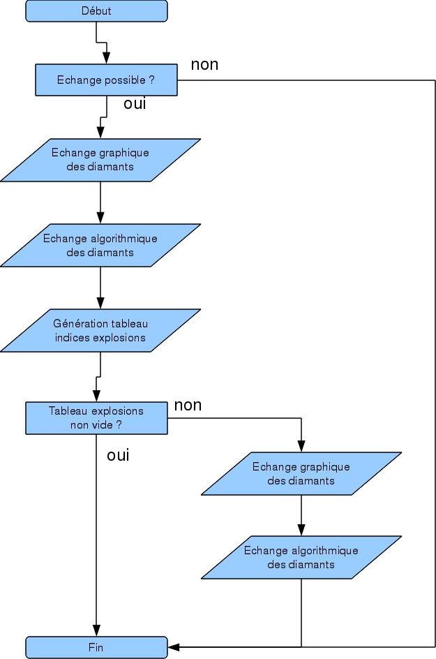
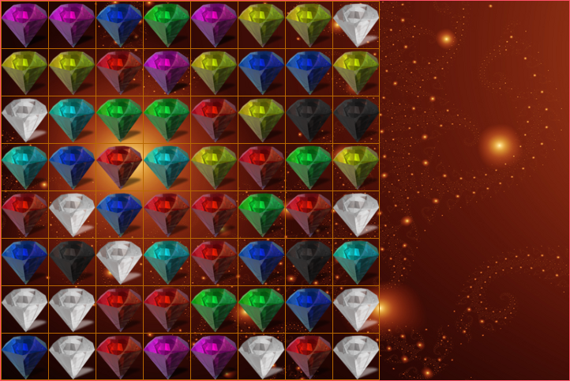

Nous allons présenter ici deux algorithmes majeurs : celui qui gère l'échange de deux diamants et tout ce qui s'en suit (explosion(s), échange interdit, etc ...) et celui qui recherche de vérifier la validité d'une grille pendant le jeu (ou encore recherche de solution).
Echanger deux gemmes est votre unique façon d'intéragir avec la grille. Il est donc logique, dans le cadre de ce projet, d'en expliquer les rouages. Tout d'abord, il faut savoir que, dans notre jeu, l'échange de deux diamants se fait en plusieurs phases :

Comme vous pouvez le constater, cet algorithme se découpe en quatre phases majeures : la détermination de la possibilité de l'échange, l'échange graphique, l'échange algorithmique, et la génération des explosions. Plusieurs combinaisons de conditions nous permettent de valider ou non l'échange. Par exemple, si le joueur échange deux diamants, mais qu'aucune explosion ne s'en suit, on voit très bien à travers ce diagramme que les diamants reviendront à leur place, graphiquement et algorithmiquement.
Bien que cette phase de l'algorithme soit cruciale, son implémentation est relativement simple. Ce morceau d'algorithme a pour responsabilité de déterminer la possibilité de l'échange en se basant sur la position des diamants à échanger.

Faisons simple : admettons qu'ici, le joueur veuille échanger le diamant blanc en bas à droite avec celui juste à sa gauche, un rouge. La tentative d'échange est alors dite possible, mais l'échange en lui même ne l'est peut-être pas. Ainsi, lorsque le joueur va demander à échanger ces deux diamants, il vont s'échanger une première fois, puis une deuxième (car aucune explosion n'aura été générée).
En revanche, admettons qu'il décide d'échanger le même diamant blanc avec le bleu, une case à gauche au dessus. La tentative d'échange est alors dite impossible, car les déplacements en diagonale ne sont pas autorisés.
L'algorithme doit donc retourner vrai si les deux gemmes à échanger son collées adjacentes sur l'horizontale ou la verticale, et faux dans tous les autres cas
Une façon efficace de le faire est de voir la chose comme cela : soit les diamants ont la même ordonnée et son collés (ils sont donc adjacents sur l'horizontal), soit ils ont la même abscisse et sont collés (ils sont alors adjacents sur la verticale).
Le problème est de savoir comment déterminer si deux diamants sont collés l'un à l'autre. C'est très simple. Nous avons deux cas : horizontal et vertical. Dans le cas horizontal, deux diamants sont adjacents si la distance entre leurs abscisses vaut la taille d'un diamant. Dans le cas vertical, deux diamants sont adjacents si la distance entre leur ordonnées est égale à la taille d'un diamant (les diamants étant carrés). Pour calculer la distance sur un axe entre deux diamants, il suffit de faire la différence de la composante maximale par la minimale :
distance(d1, d2).x = max(d1.x, d2.x) - min(d1.x, d2.x)
distance(d1, d2).y = may(d1.y, d2.y) - min(d1.y, d2.y)
Donc finalement, si les diamants ont la même ordonnée et que la distance entre leurs abscisses vaut la taille d'un diamant ou que les diamants ont la même abscisse et que la distance entre leurs ordonnées vaut la taille d'un diamant, alors l'échange est réalisable